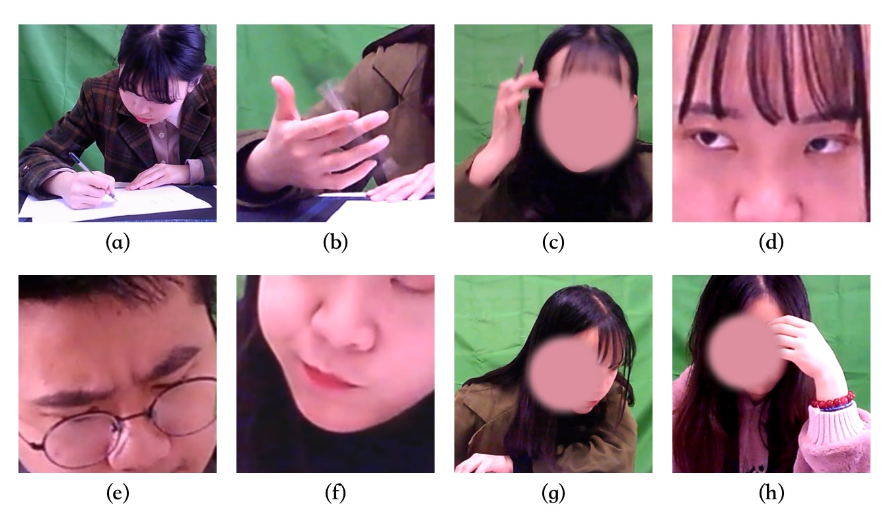
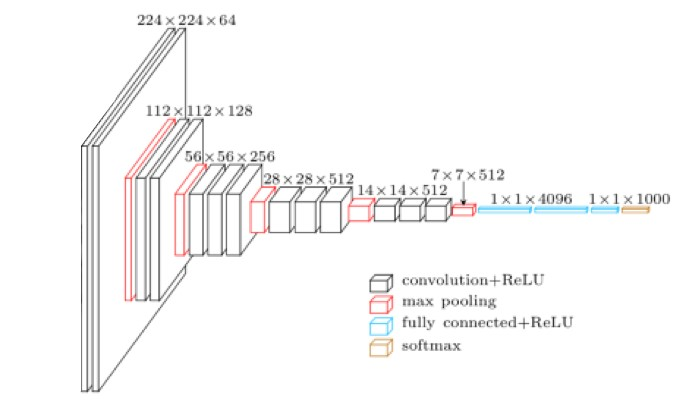
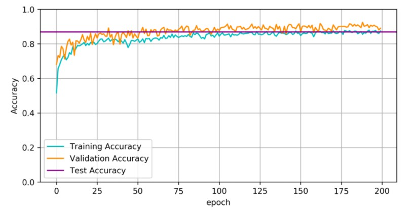
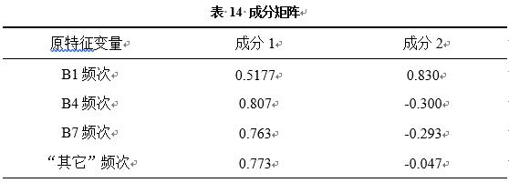
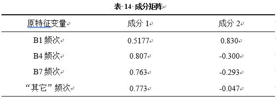
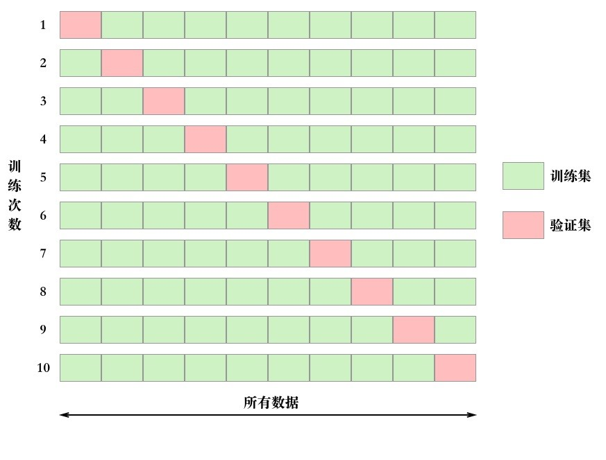
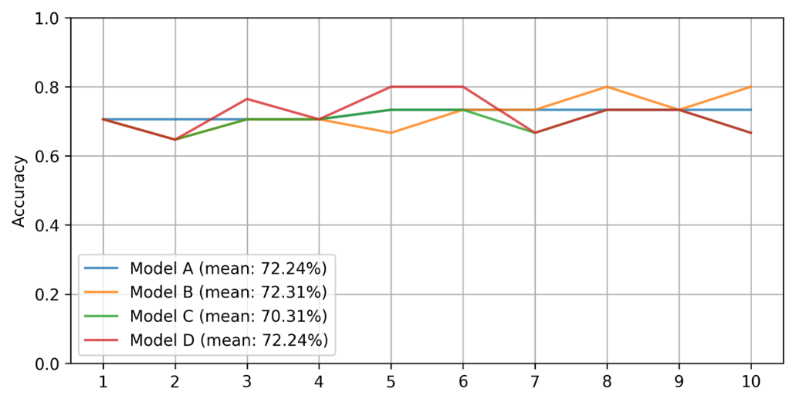
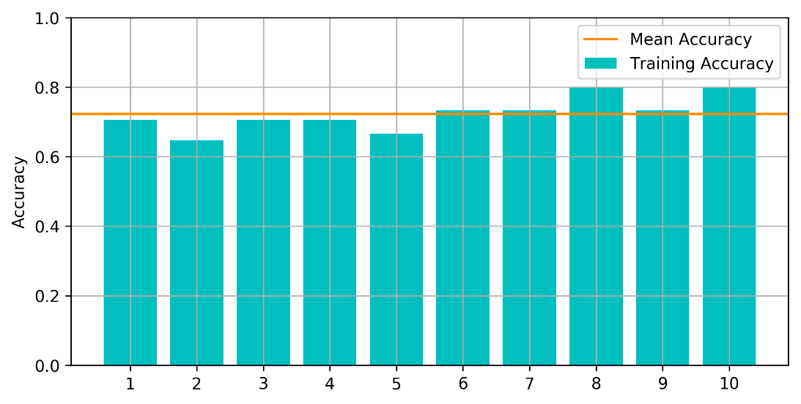
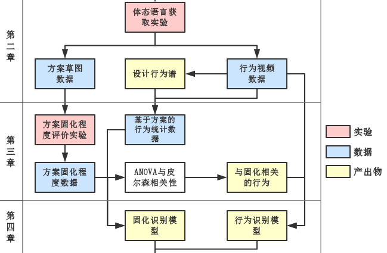

基于体态语言的设计固化识别方法研究
用机器学习
做了一点微小的工作
内容概要
- 背景知识介绍
- 实验数据的获取与分析
- 通过机器学习建立识别模型
背景知识
- 体态语言：可以粗浅地理解为 行为
- 设计固化：可以粗浅地理解为 方案重复
如何识别固化
| 特征变量 $x$ | 结果 $y$ |
|---|---|
| 各行为的频次 | 固化程度 |
用机器学习建立一个$y=f(x)$的方程，只要观测并统计行为频次即可知道固化程度
如何获得特征变量（行为频次）
体态语言获取实验
对杯子进行造型的概念设计，观察被试的行为表现
目的是获取设计过程中会出现哪些行为

设计行为谱
最后通过对12名被试的观察，得出了8种设计行为
如何获得固化程度
（需要预测的值）
固化程度评价实验
邀请6位专家对12名被试设计的158个方案草图进行评价，确定其固化程度

固化程度评价方法
目前相关研究所用的方法主要是统计重复方案数量
我提出了两个评价指标以及一种改良的评价方法
- 经验性重复度：与已经画好的方案进行比较
- 先验性重复度：与事先已在脑中的方案进行比较

方案固化程度评价量表

两个评价条目：
- 先验性重复度
- 经验性重复度
每个条目0-30分
结果计算方法
每个方案的固化分值的计算方法：
$f=\frac{\sum_{i=1}^n{PR_i+ER_i}}{2n}$
其中PR为先验性重复度、ER为经验性重复度
根据$f$可以计算固化程度
| 分值范围 | 类别 |
|---|---|
| 0-10 | 轻微固化 |
| 11-20 | 中等固化 |
| 21-30 | 严重固化 |
评价结果

| 固化程度 | 数量 | 占比 |
|---|---|---|
| 轻微固化 | 55 | 34.8% |
| 中等固化 | 59 | 37.3% |
| 严重固化 | 44 | 27.8% |
单因素方差分析
方差分析是用于检验不同水平对实验指标有无显著性影响的方法。实验中要考察的指标称为实验指标，影响实验指标的条件称为因素，因素所处的状态称为水平。
- 实验指标
- 各行为的频次
- 因素
- 固化
- 水平
- 固化程度
结果

固化水平对以下三项指标有显著影响
- 画图频次
- 动眼频次
- 转头频次
皮尔森相关性分析
皮尔森相关系数是用于反映两个变量线性相关程度的统计量，一般用$r$表示。$r$的正负表示两个变量之间相关性的正负，当值为正时表示两者正相关，反之亦然。$r$的绝对值反应两个变量之间线性关系的强弱，当$r$值为零时表示不存在线性关系，但有可能是其他非线性关系。
结果
固化分值与以下行为的频次显著正相关，但相关性不强
- 画图
- 动眼
- 动嘴
- 转头
小结
通过上述两个实验，取得以下成果：
- 获取了行为频次数据($x$)、固化程度数据($y$)
- 证明了固化程度对 画图、 动眼、 转头的频次有显著影响，并且存在显著相关性
所以，理论上我们可以建立一个$y$关于$x$的模型，只要统计一个方案创作期间设计师这三种行为的出现频次，就能知道这个方案的固化程度
通过机器学习识别设计固化
- 通过图像识别行为
- 通过行为统计识别固化
行为识别模型
作用：通过图像识别行为
用到了以下材料：
- Nvidia GTX 1060 显卡
- 深度学习框架Keras
- 经过预训练的VGG16卷积神经网络
- 体态语言获取实验中记录的视频
建模步骤
- 标注数据
- 数据增强
- 搭建模型
- 训练模型
- 交叉验证
- 可视化结果
1 标注数据
- 用premiere编辑视频，按行为类别切成视频片段后导出

- 使用Python的图像处理库PIL、Imageio，以8帧/秒的速率对视频片段进行采样，保存成.jpg
2 数据增强
将原始图像进行随机缩放、旋转、反转、剪切等操作后生成新的图像用以扩充训练集的数据量。

Keras框架中有相关工具，实现起来非常简单
3 搭建模型
模型以VGG16作为基础的深度卷积神经网络，保留了其13个卷积层和相应的权值
然后在这13个卷积层后面加上了2个全连阶层，这两层的权值需要训练

4 训练模型
过程就是挂机，略过
但要多次调试参数，选其中最好的一次结果
5 交叉验证
把数据分成三份：训练集（60%）、验证集（20%）、测试集（20%）

6 可视化结果
正确率86.88%
固化识别模型
通过行为频次识别是否固化
用到了以下材料：
- 机器学习库Scikit-learn
- 固化程度评价实验的数据
建模步骤
- PCA
- SVM
- K-fold交叉验证
- 结果可视化
PCA
PCA用于对数据进行降维（4维 => 2维）
因为样本容量较小，减少特征变量的数量可以显著增加模型的准确度
PCA结果
 

SVM
支持向量机（Support Vector Machine）相比神经网络而言，在小样本训练条件下具有准确性高的优点
使用了四种配置建立四个模型，取性能最好的一个
| 模型编号 | 分类器类型 | 核函数 |
|---|---|---|
| Model A | SVC | Linear |
| Model B | SVC | RBF |
| Model C | SVC | Poly |
| Model D | LinearSVC | 无 |
K-fold交叉验证
适用于数据量较少，无法60%/20%/20%分的时候
结果可视化
四个模型中，Model B的平均正确率最高，达到72.31%
Model B各次结果之间差别较小，标准差为4.69%，表明模型有较好的稳定性
x轴：成分1；y轴：成分2
黄点：非固化样本；蓝点：固化样本
蓝绿区域交界线：决策边界
处于边界内（绿色区域）的样本被模型识别为固化状态

识别系统原型开发

总结
反思
有一个坑你们尽量不要踩
主观评价误差非常大
take a 5-minute break
be free to ask me any question
下节预告： 论文撰写经验